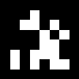
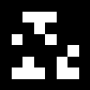
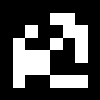
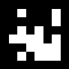
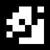
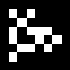
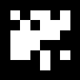
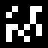

GazeDeck WebSocket Test Client
Connecting to ws://localhost:8765...
X: -- |
Y: -- |
Connected Clients: -- |
Screen: --










Instructions:
- The dot represents your gaze position on a 1020x780 screen
- 10 AprilTags positioned EXACTLY at main.py marker_verts coordinates
- Each AprilTag is 100x100px with red border for visibility
- Green = Connected, Red = Disconnected
- FIXED: Y-axis inverted - pupil labs uses inverted Y coordinates
- DEBUG: Check console for raw coordinate values
- AprilTag positions: Row1(90px): 65,295,525,755,985px | Row2(590px): 65,295,525,755,985px
- Test by looking at different AprilTag positions